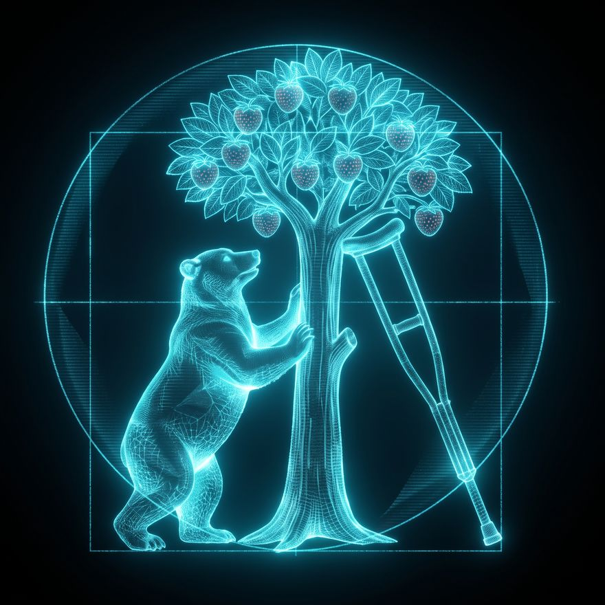
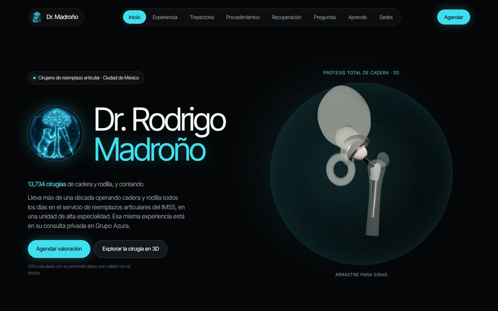

Revisamos cómo te ve hoy alguien que te busca en internet, qué tienes a tu favor y qué hace falta para que los pacientes particulares te encuentren.
Preparado por Polar Multimedia para el Dr. Rodrigo Madroño Carpinteyro
Avanza con ↓ o con los botones de abajo

Buscamos tu nombre y tu especialidad como lo haría la familia de un paciente. Prueba las búsquedas:
Revisión hecha por Polar el 17 de noviembre de 2026. Si tienes algún perfil que no vimos, dinos y lo sumamos.
Buscan en Google, comparan cirujanos y eligen entre los que aparecen. Si no apareces, no entras en la comparación.
Hoy esa búsqueda no devuelve nada que confirme lo que les dijeron de ti.
La consulta privada es lo que te da un ingreso propio a futuro, y hoy no tiene por dónde crecer.
La buena noticia: partes de cero, sin mala reputación que corregir, y tu apellido es poco común, así que ocupar el primer resultado con tu nombre es rápido.
Desde 2015, en el servicio de reemplazos articulares del IMSS. Es tu argumento más fuerte.
Residencia en Traumatología y Ortopedia y curso de alta especialidad en una unidad del IMSS.
Consejo Mexicano de Ortopedia y Traumatología y Sociedad Mexicana de Cirugía de Cadera.
Consulta en Tabacalera y cirugía en Sanatorio Durango. No hay que inventar nada, solo mostrarlo.
Suman, aunque van en segundo plano: lo que convence es lo que haces en quirófano.
El oso y el madroño, con la muleta que te da la especialidad. Ya tienes una versión nueva para elegir.
El perfil del paciente es nuestra hipótesis de arranque; tú sabes mejor quién llega a tu consulta y lo ajustamos contigo.
El sitio es el centro. Los perfiles de búsqueda hacen que te encuentren y las redes llevan gente al sitio. Toca cada pieza:

El sitio es una versión de prueba: no aparece en Google y varias fotos son ilustrativas hasta tener las tuyas.
No tienes que salir a cámara ni escribir nada. Tú solo apruebas.
Una idea al día, ya adaptada a cada red y al sitio.
La ves en el teléfono, tal como se va a publicar.
Nada sale sin tu aprobación. Si no respondes, no se publica.
En las redes que tocan ese día.
El contenido del primer mes ya está escrito. El envío automático por WhatsApp todavía no está construido; es el siguiente paso una vez que apruebes el rumbo.
Un médico que promueve sus servicios en México necesita presentarlo. El trámite es el COFEPRIS-02-002-A y, según las fuentes que revisamos, es gratuito.
Cédula profesional 6440493 y de especialidad 8475828, en el sitio, los perfiles y las publicaciones.
Nada de "sin dolor garantizado", comparaciones con otros médicos ni marcas de prótesis.
Las historias de pacientes y las fotos de antes y después son de lo más regulado.
Esto es un resumen, no asesoría legal: conviene validarlo con un abogado sanitario antes de lanzar. Fuentes: AgendaPro, Papelea.
Marca lo que ya nos diste o resolvimos en la plática.
0 de 0 resueltos